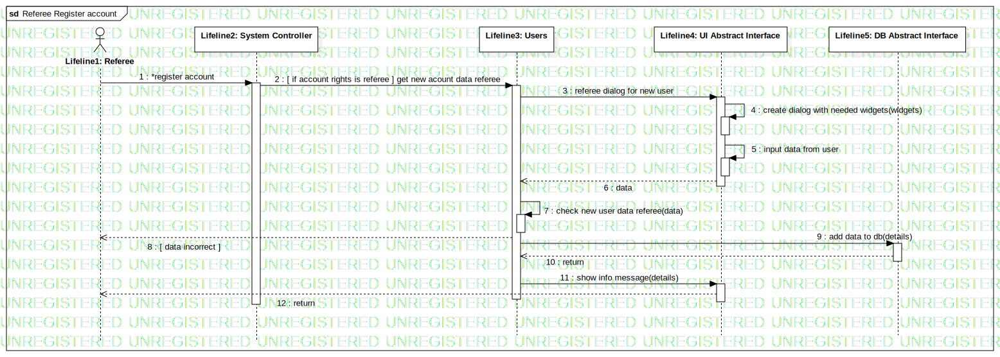

Interaction1
UMLInteraction
Untitled
::
Model1
::
Collaboration3
::
Interaction1
Description
none
Diagrams

Referee Register account
Participants
Lifeline1: Referee
Lifeline2: System Controller
Lifeline3: Users
Lifeline4: UI Abstract Interface
Lifeline5: DB Abstract Interface
Messages
*register account (Lifeline1→Lifeline2)
[ if account rights is referee ] get new acount data referee (Lifeline2→Lifeline3)
create new dialog (Lifeline3→Lifeline4)
create dialog with needed widgets (Lifeline4→Lifeline4)
input data from user (Lifeline4→Lifeline4)
data (Lifeline4→Lifeline3)
check new user data referee (Lifeline3→Lifeline3)
[ data incorrect ] (Lifeline3→Lifeline1)
add data to db (Lifeline3→Lifeline5)
return (Lifeline5→Lifeline3)
show info message (Lifeline3→Lifeline4)
return (Lifeline4→Lifeline1)
Properties
Name
Value
name
Interaction1
stereotype
null
visibility
public
isReentrant
true
Owned Elements
Referee Register account